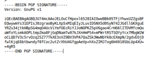

PageSigner v3 implements the TLSNotary protocol compatible with TLS 1.2+. Additionally, not only the server response gets notarized but the request as well.
This new version takes more time to complete than how it was before. Whereas earlier the notarization would usually complete within 10 sec, now the expected wait time is from 30 to 90 sec. Your internet connection speed will be the decisive factor as anywhere from 50 to 100 MB of data needs to be exchanged as part of the TLSNotary protocol.
We are happy to announce that PageSigner 2.0.0 has been released. It works with TLS 1.2 (more specifically the TLS_ECDHE_RSA_WITH_AES_128_GCM_SHA256 cipher suite).
Update: Nov. 2021, PageSigner v3 again follows the TLSNotary protocol. And the caveat below no longer applies.
PageSigner no longer follows the TLSNotary protocol as described in the whitepaper. It introduced a change – now the symmetric keys for the TLS session are generated solely by the notary.
Is this a big deal? No. Because in PageSigner the notary is not actually human. It is a server set up at AWS (Amazon Web Services) configured by us in such a manner that even we at TLSNotary are unable to log into it to see its internal workings or to examine the keys it generates for the TLS session. The only thing we could do with it is to turn it off. We call it an oracle server.
You can read about how exactly the server is set up here https://github.com/tlsnotary/pagesigner-oracles/blob/master/INSTALL.oracles
When PageSigner notarizes a session, it checks whether the notary is indeed an oracle server that was set up in a proper way and only then does PageSigner proceed with notarization.
But let’s assume the very unlikely scenario – the adversary found a way to break into the PageSigner’s oracle server and can see the TLS keys being generated. Does that mean that the adversary now can see the plaintext of the notarization session? No, he only can see the encryption key, nothing more.
Update: Nov.2021. With PageSigner v3 the threat described below no longer applies. Even if the adversary is the ISP, he will not be able to jeopardize the integrity of the TLS session. For the adversary to make any use of the encryption key he must get hold of the data that is being encrypted by that key, i.e. he has to be monitoring the auditee’s internet connection at the very moment when notarization is taking place. He would either have to be sniffing your Wi-Fi packets or be in collusion with your ISP.
The odds are slim of the same adversary finding a way to break into the PageSigner server and at the same time being in control of your connection while you are performing a notarization. Yes, the odds are slim but they are not zero and so we felt the obligation to warn you about it in this blog post.
In the meantime, here are some of the good things to be looking forward to for PageSigner2 in the near future:
– the ability to selectively redact sensitive text from the notarization files.
– Firefox support (as soon as libdweb is merged https://github.com/mozilla/libdweb)
(Updated to refer to PageSigner. The main webpage for PageSigner is here ).
(If you’re more interested in code than words, the main repo is here and oracle (server) part here . The rough technical workflow is here).
Fantasy tlsnotary
What we really want is something like this:
Browse to a website, log in, pull up the page with the juicy details.
Click a button and get a “notarized” or stamped copy of that page.
Some time later, pass that over to someone else (an auditor, or even the general public if there’s some reason to broadcast, and privacy doesn’t matter)
It doesn’t, and can’t, work for every single website; the most common reason is when the site is using certain kinds of dynamic content.
By negotiating the TLS secrets with an auditor, you’re able to prove to the auditor that the data is valid, but not anyone else. See the previous post On Signatures for details of the issue here (repudiability).
Doing it with an auditor is a cumbersome process – you need to organize to do it with them, at the same time. This is quite a lot of hassle; not enough to stop you if you really need an audit, but it matters.
Auditing != notarizing
If you look at the “delta-to-fantasy” list above, only problem #1 is baked in at the algorithm level. #2 and #3 are different – they are a consequence of insisting on the entire process only being carried out with a single counterparty – a single “auditor” agent. But this auditor agent is carrying out two separate functions:
prove that the data is honestly created
read the data (and interpret its meaning)
The beautiful thing is, you can prove that the data is not fake without reading the data, and without intercepting or reading the data even in encrypted form!
So, we introduce: the blind notary server. What does it do? It follows all the steps of the tlsnotary algorithm except the last one. It withholds the secret material needed to fabricate server traffic, and receives a sha256 hash (commitment) to the encrypted traffic, and only then releases that secret data to the auditee. At the same time, it provides a signature to the auditee confirming that that’s what happened – something like a notary stamp of the validity of the audit. The auditee then bundles it up into a file whose contents are, very crudely:
TLS secret data : Encrypted traffic from server : Notary Signature
This file is self-validating, assuming you trust the public key used to make the signatures (which is the notary server’s public key of course). It can be moved around and given to others as you like; we have created the effect of a digital signature on the html page – if the notary server is trusted to follow the rules.
The problem of trusting the notary server has been addressed by means of the use of the Amazon AWS oracle, as described here , and as coded here. Instructions are there on how to try it out.
Meanwhile, let’s consider what the server is not trusted with:
usernames, passwords, any user credentials
money
the TLS master secret (which would allow traffic decryption)
the TLS premaster secret (as above)
the HTML page
the encrypted version of the HTML page
(In case you are confused how it can not hold TLS secrets, note that it owns half of the premaster secret, which is useless without the other half, and only a hash value which is used to create the master secret, again useless on its own. It does not ever possess any of the ssl keys for the session, including the server mac key).
In fact, the only real information a user has to give to the server is the server public key of the website to be audited (and, after all it’s a public key).
Once the notary server has given you your signature, it has no more business with you. If you don’t like the audit, throw it away and do another one. Or not – the server has no knowledge or interest. The notary server’s signature means this and only this:
The user did not receive the secret material (S) to build the master secret (and therefore server mac secret) UNTIL they sent me the commitment hash (H) of the encrypted traffic for the site with pubkey N.
What is signed is (S,H,N).
Why this is useful.
This quasi-non-repudiable signature on pages could be useful in a broad context of cases. By splitting notarizing and auditing, users can simply hold audit files until they see fit to give them to another party. Any situation where a screenshot is of interest could be vastly improved by replacing it with a .audit file, whereever that works. Examples:
Prove you received an offensive private message on your favourite message board or social network (that could put the cat among the pigeons!)
Prove that a website retroactively changed its statement
Prove that a website is reporting a certain financial balance to you. Why? To help with peer to peer trade? To brag? To give evidence of fraud? The list goes on..
In the early days of public key cryptography, it perhaps wasn’t as widely appreciated as it is today that just encrypting your messages doesn’t cut it.
In the cryptography folklore, we have Eve and Mallory, who are always interfering with poor Alice and Bob. Eve just likes to listen. Eve does not like encryption, obviously.
Mallory is a bit more mischievous, and actually wants to mess with what Alice and Bob are saying. Mallory’s role is that of Man-in-the-middle, or, more usually, MITM. And encryption just isn’t good enough when Mallory is there.
The problem could be illustrated with an oversimplified example. Alice sends to Bob the message “$100 from Mallory”. But Mallory gets it first, receiving “R$IJOR@4rfsdfDF#E” (it being encrypted and all). Mallory doesn’t know what it says, but has a pretty good idea, so he just decides to send “R$IJOR@4rfsdfDF#E” to Bob – twice. Now Bob, being remarkably dull, interprets the received “$100 from Mallory $100 from Mallory” as indicating that $200 has been received, and promptly sends $200 of goods to Mallory.
If this seems ridiculous, it is (for example the same plaintext does not result in the same ciphertext, which is required for this attack, in all except the most woefully insecure systems), but not the “Bob is dumb” part – remember, Bob could be a web server.
Oh, OK then. But we can use digital signatures, right?
dat’s me, dat is.
So to get any kind of use out of encrypted communications, you have to have two other properties – authentication and integrity. You have to know who’s talking to you, and that their message hasn’t been chopped up or swapped around. So, that means we need digital signatures, right? I’m guessing anyone reading this has “done” digital signatures 101, but for those not too sure, a reminder that they’re based on the use of a public and private key pair – you know that the owner of the private key corresponding to the public key was the one who did the signing. This does replicate the property of old-fashioned handwritten signatures. If you signed it, I can take it to court and show people that you signed it.
Now here’s why this is relevant. Consider the problem of proving that you received a webpage from VeryImportantSite.com. If they wanted to, the owners of veryimportantsite could attach a digital signature to the page. Then, you could pass this page around to anyone, or take it to court as mentioned, and say, look – that website is the one who signed it, because this signature verifies against their public key. You could point to the certificate info found by clicking on the padlock in your web browser, and get the public key right there.
Why don’t organisations such as banks seem to do this much?
One possible reason is the property of repudiability. Alice wants to tell Bob a secret, but she doesn’t want him to be able to spread it around and prove that Alice said it. This gets very muddy because it’s where the crypto rubber hits the real world road. Might a signature imply a particular legal liability?
While that part is conjecture, here is what is fact: digital signatures are non-repudiable up to the non-repudiability of the public key identity, which is pretty damn non-repudiable in the case of website server certificates for big commercial or governmental entities.
So if you’re paying attention, you’ll have noticed a slight contradiction – to get encryption that’s worth a damn, you need authentication. To get authentication you need digital signatures, but people/business hardly ever use them. So what do they use?
You did not hear this from me…
Enter stage left: HMAC. In ELI5 mode, HMAC is basically a little bit of data created from a message that you could only have generated if you knew a secret. And this is what TLS uses for authentication and integrity. Your browser may well have downloaded 20 bytes of HMAC data once or twice to verify this blog post. But here’s the kicker – HMAC does not give non-repudiability, because in order to check the HMAC, you don’t use a public key recorded in everybody’s browser or on some database – instead, you use part of the secret data that was negotiated in the TLS handshake at the start – in other words, you use a secret that only Alice and Bob were privy to at the time the message was sent.
Looks legit.
If you’re with me so far, you’re probably coming to the conclusion that the way things are isn’t that surprising. When you realise the non-repudiability feature of digital signatures is a little bit ‘heavy’, it makes sense that the security protocol we use on the internet doesn’t have it baked in by default. However, it’s still very surprising that it isn’t used in more situations. The most obvious one is proof of identity or income or residence that is so often required by so many institutions for so many reasons. Why can’t a government website that verifies your professional licensing simply sign the information, so that it’s actually useful!? After all, you already know that you’re a qualified doctor! This kind of thing gets dealt with at the level of stamps, handwritten signatures, crappy embossed paper and jpg scans, which would be alright if we didn’t have, you know … digital signatures! To be fair, there are cases out there where digital signatures are being used in intelligent ways, but they’re quite rare.
Non-repudiable-ish HMAC?
How does TLSNotary fit in? Well, you could look at it either as a stopgap or a disintermediation. You don’t necessarily need a trusted institution to be giving a non-repudiable digital signature to convince someone else of the facts or secrets that the institution attests to. You simply involve a third party in the process of generating secrets such that (a) the third party doesn’t know the secrets, but (b) you don’t know *all* the secrets either, at least not to start with. It’s like this:
In TLSNotary, the auditor doesn’t let you verify the HMACs at the start. You pull in the encrypted data, but you don’t yet know that Mallory hasn’t inserted an extra “$100 from Mallory” into the stream. So at that point, the data you’ve got sitting on your disk is not safe – you don’t know it’s genuine, and neither does the auditor. But you use a well known trick – the cryptographic commitment. Send a sha256 (or any other) hash of the encrypted data to the auditor. After that, you can’t cheat or lie. The auditor sends back the secret material and you can generate the HMAC key, allowing you to authenticate the server you’re talking to. Then you’re back to TLS normality; but the auditor will only believe your HTML page if it matches the original hash commitment.
The result is – non-repudiability becomes fuzzy. You can prove to one other person, at least, what the institution said. And it is possible, perhaps, to go further – but that’s for another post.
The birth of what we now call “TLSNotary” was a rather slow and complex process. The first post on the topic of “ssl logging” is here, but it has been edited extensively, and originally had the title “P2PX. Using SSL dumps as proof of money transfer“. Reading the first few pages shows how the idea developed: use the cryptographic soundness of SSL to somehow “record” the page visited in a way that couldn’t be faked. Early ideas were fairly primitive; TLSNotary as an idea was a quantum leap – withhold the master secret key of the session from the client, so that it’s genuinely impossible for them to fake the data. This idea in its rudimentary form had security issues, but a key mathematical insight in early 2014 allowed us to remove that security issue entirely and create a viable way for one person to prove irrefutably to another that they had received a certain response over SSL without compromising their security.
The motivation for solving this technical challenge was very clear: if you want to exchange a bitcoin payment for a bank transfer, the bank transfer needs to *somehow* be independently verifiable, so that an arbitrator could resolve any dispute that arises. The arbitrator could in theory be just code, but that requires an oracle. That idea was developed further in what we called “Paysty” – using Amazon AWS instances pre-prepared so as not to be modifiable, and running the audit from that instance.
Since even in the Paysty model, you still need a human arbitrator to interpret the evidence (if the evidence is supposed to come from just *any* bank or payment service), and since the idea of creating trustless code on an AWS instance was both clever and possible but not very practical, the TLSNotary idea instead took centre stage.
Later in 2014 further technical challenges were overcome, in particular removing the necessity to make modifications to the Firefox browser (which, though it could be done safely using deterministic builds, created a lot of extra complexity), adding performance improvements, adding TLS 1.1 support and so on.
Today TLSNotary is a functional piece of software. But what can it be used for? Let’s examine 3 use cases, starting with the most obvious one that was the original intention:
Alice buys bitcoins from Bob, while Charlie holds the third of a 2 of 3 multisig key. If there’s a dispute, Charlie can ask either Alice or Bob to run TLSNotary and prove that they received a certain transaction page or statement page from their bank.
Alice wants to prove her identity, or perhaps her bank balance. For example: she is a member of a peer to peer lending group, and wishes to borrow. To aid her chances she enlists an auditor Charlie which performs checks on her identity and other details. This is difficult, because Alice lives in a different jurisdiction from Charlie. Alice uses TLSNotary to connect to a government website (or a bank or a utility) that proves her ID number or address or … Then Bob lends to Alice based on, amongst many other factors, the information vetted by Charlie. Of course, it might be possible to do away with Charlie entirely in this use case.
A holder of funds (e.g. a Bitcoin exchange) wants to be able to prove to its users that it is not only Bitcoin-solvent but fiat-solvent. A radical way to decentralize auditing would be to give the ability for any user (or more likely some subset) the ability to view balances held at the bank directly, instead of expecting them to trust a single appointed auditor. Admittedly, this is unlikely in naive form, given the traditional expectations of privacy in business, and the inability to use Merkle tree tricks.
Watch this space for entries connected to TLSNotary, SSL, TLS, general crypto, cryptocurrency, decentralised trading, Bitcoin and other similar things.